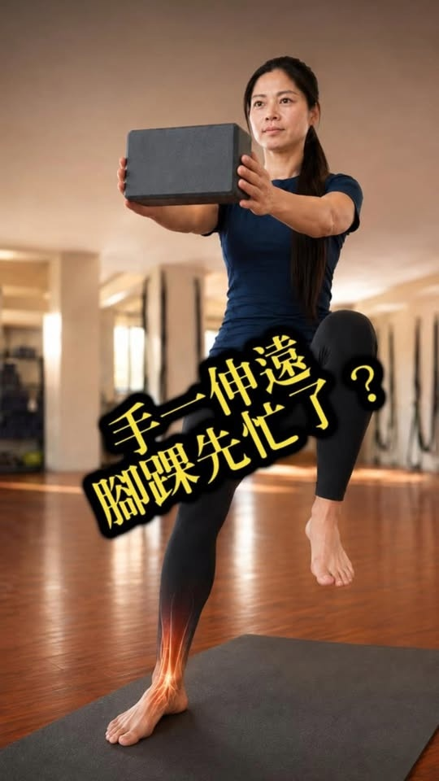
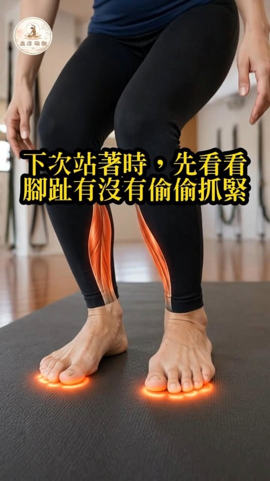
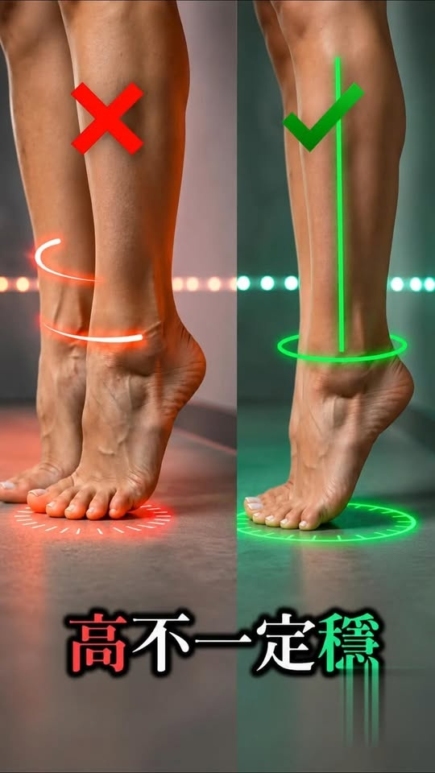

精選 Reels 體態動作庫
看懂動作，不盲目硬撐
匯集破十萬觀看的自媒體精選短片，10 秒拆解錯誤代償與正確發力，配合深度專題，把身體練懂。

👁️ 14.5 萬次觀看 · 全網瘋傳
足踝活動度・防塌陷
📖 深入閱讀：足弓塌陷如何一路往上影響骨盆？ →
膝蓋碰到牆，腳跟別偷偷抬起來！
測試踝關節背屈活動度的經典動作。很多人腳跟一離地就以為自己拉到了，其實是阿基里斯腱與比目魚肌攣縮，引發足弓塌陷！

👁️ 13.4 萬次觀看 · 爆款推薦
四足跪姿・腰背代償
📖 深入閱讀：骨盆前傾自我檢測與真實成因 →
屁股一往後坐，腰就先拱起來？
做四足跪姿往後坐時，屁股還沒坐下腰椎就先凸起來代償。這不是你太胖或骨頭硬，而是骨盆翻轉與腰大肌深層張力卡死！

👁️ 7.6 萬次觀看 · 熟齡防跌
站姿平衡・防跌定錨
📖 深入閱讀：熟齡防跌與平衡力真相 →
穿褲子一抬腳，身體就東倒西歪？
穿褲子抬腳低頭找褲管時，視線一移身體就偏。40歲後先固定前方一個點，立刻喚醒 70% 本體感覺神經受器！

👁️ 10.1 萬次觀看 · 爆款精選
承重動態・膝內扣預防
📖 深入閱讀：膝蓋卡卡痛點與髖關節連鎖解析 →
下樓梯時，膝蓋有沒有偷偷往裡跑？
很多人下樓梯膝蓋痛，問題往往不是膝蓋退化，而是下踩時膝蓋先往內偏（Knee Valgus），導致髕骨受力不均！

👁️ 9.5 萬次觀看 · 爆款精選
重心路徑・動態平衡
📖 深入閱讀：熟齡平衡力與重心控制練習 →
手一伸遠，腳踝先忙了？
生活中的平衡很少是站著不動。拿東西、轉身手伸遠時，真正的平衡不是完全不晃，而是移動後能穩穩接回來！

👁️ 9.6 萬次觀看 · 爆款精選
足底筋膜・三點支撐
📖 深入閱讀：足弓接地與全身連鎖反應 →
越想站穩，腳趾反而抓得越緊？
感覺不穩時用力扣住腳趾，反而讓腳踝與小腿更僵硬。感受腳跟、大拇趾球、小趾球三點自然延伸接地，穩定感立刻倍增！

👁️ 9.3 萬次觀看 · 爆款精選
日常動態・臀肌離心力
📖 深入閱讀：久站腰痠與臀肌失憶的修復路徑 →
妳不是坐下，是最後幾公分直接掉下去？
接近椅面最後五公分身體突然失控整個人掉下去？這不是骨頭問題，而是臀肌離心煞車能力失憶。教你在動作中找回接住自己的力量。

👁️ 9.2 萬次觀看 · 爆款精選
小腿活動度・腳趾控制
📖 深入閱讀：鞋子與足踝肌力對全身姿態的牽引 →
踮腳時，腳趾會不會偷偷抓住地板？
踮得越高不代表練得越好。踮起來時腳趾先縮起來還是身體先晃？教你如何不靠腳趾死扣，精準鍛鍊小腿深層肌群與踝關節穩定性。

👁️ 8.7 萬次觀看 · 爆款精選
椅子式對位・臀肌啟動
📖 深入閱讀：壁繩如何輔助下肢關節卸載與臀部發力 →
以為在練臀腿，結果先燒的是大腿前側？
做椅子式或深蹲時，大腿前側痠爆但屁股沒感覺？壓力全堆在膝關節！先把臀部往後坐、重心放腳跟，臀部與大腿才能協同發力。